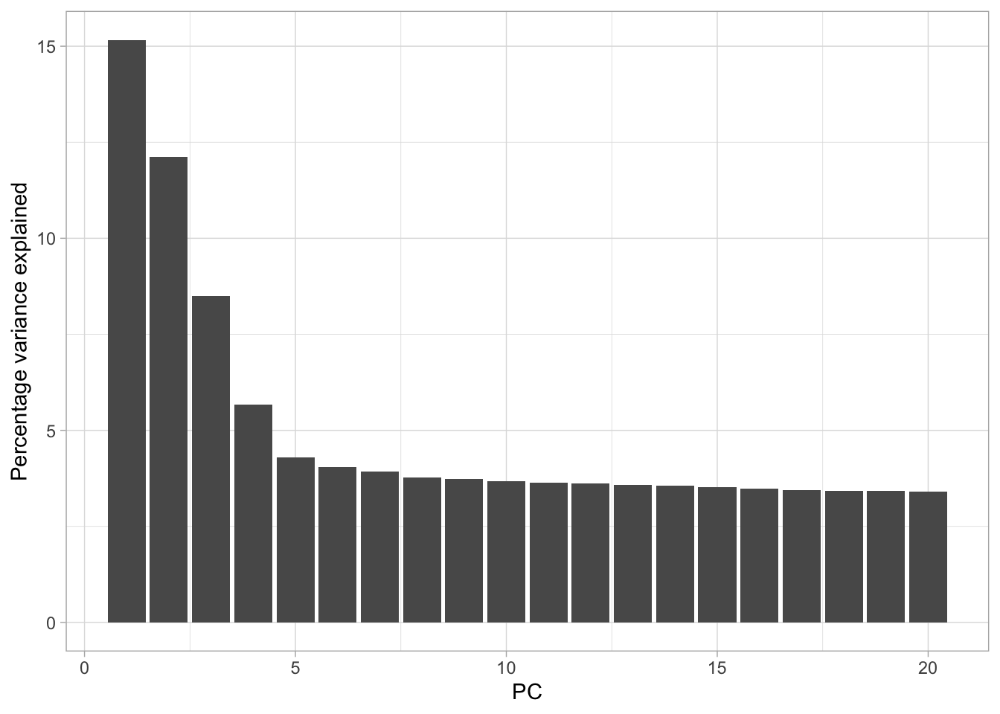
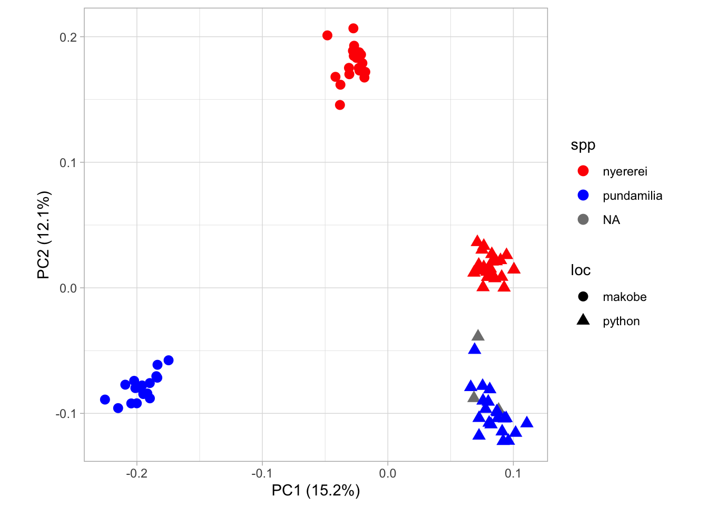

Last updated: 2022-10-19
Checks: 7 0
Knit directory: LIFE4141_popgenomics/
This reproducible R Markdown analysis was created with workflowr (version 1.7.0). The Checks tab describes the reproducibility checks that were applied when the results were created. The Past versions tab lists the development history.
Great! Since the R Markdown file has been committed to the Git repository, you know the exact version of the code that produced these results.
Great job! The global environment was empty. Objects defined in the global environment can affect the analysis in your R Markdown file in unknown ways. For reproduciblity it’s best to always run the code in an empty environment.
The command set.seed(20211125) was run prior to running
the code in the R Markdown file. Setting a seed ensures that any results
that rely on randomness, e.g. subsampling or permutations, are
reproducible.
Great job! Recording the operating system, R version, and package versions is critical for reproducibility.
Nice! There were no cached chunks for this analysis, so you can be confident that you successfully produced the results during this run.
Great job! Using relative paths to the files within your workflowr project makes it easier to run your code on other machines.
Great! You are using Git for version control. Tracking code development and connecting the code version to the results is critical for reproducibility.
The results in this page were generated with repository version db46e57. See the Past versions tab to see a history of the changes made to the R Markdown and HTML files.
Note that you need to be careful to ensure that all relevant files for
the analysis have been committed to Git prior to generating the results
(you can use wflow_publish or
wflow_git_commit). workflowr only checks the R Markdown
file, but you know if there are other scripts or data files that it
depends on. Below is the status of the Git repository when the results
were generated:
Ignored files:
Ignored: .DS_Store
Ignored: .Rhistory
Ignored: .Rproj.user/
Untracked files:
Untracked: LIFE4141_popgenomics/
Unstaged changes:
Deleted: analysis/practical2.md
Note that any generated files, e.g. HTML, png, CSS, etc., are not included in this status report because it is ok for generated content to have uncommitted changes.
These are the previous versions of the repository in which changes were
made to the R Markdown (analysis/practical1.Rmd) and HTML
(docs/practical1.html) files. If you’ve configured a remote
Git repository (see ?wflow_git_remote), click on the
hyperlinks in the table below to view the files as they were in that
past version.
| File | Version | Author | Date | Message |
|---|---|---|---|---|
| html | 087984a | markravinet | 2021-11-26 | Build site. |
| Rmd | 5bac505 | markravinet | 2021-11-26 | Uploading R scripts |
| html | eeab5fe | markravinet | 2021-11-25 | Build site. |
| Rmd | 169bf9e | markravinet | 2021-11-25 | Remove image links |
| html | 4c3a747 | markravinet | 2021-11-25 | Build site. |
| Rmd | 7153f36 | markravinet | 2021-11-25 | Generate working R code |
| html | 49e1e38 | markravinet | 2021-11-25 | Build site. |
| Rmd | 9cfe326 | markravinet | 2021-11-25 | Add all markdown |
The first thing we will do is investigate population structure using principal components analysis. Examining population structure can give us a great deal of insight into the history and origin of populations. Model-free methods for examining population structure and ancestry, such as principal components analysis are extremely popular in population genomic research. This is because it is typically simple to apply and relatively easy to interpret.
Essentially, PCA aims to identify the main axes of variation in a dataset with each axis being independent of the next (i.e. there should be no correlation between them). The first component summarizes the major axis variation and the second the next largest and so on, until cumulatively all the available variation is explained. In the context of genetic data, PCA summarizes the major axes of variation in allele frequencies and then produces the coordinates of individuals along these axes.
To perform a PCA on our cichlid data, we will use plink
- specifically version
1.9 (although be aware older and newer versions are
available). Note that plink was originally written with
human data in mind and has also subsequently been extended to include
some model species. As a result, we need to provide a bit of extra info
to get it to work on our dataset.
One of the major assumptions of PCA is that the data we use is indpendent - i.e. there are no spurious correlations among the measured variables. This is obviously not the case for most genomic data as allele frequencies are correlated due to physical linkage and linkage disequilibrium. So as a first step, we need to prune our dataset of variants that are in linkage.
First things first, we will make a directory called
pca
# move to your home directory
cd ~
# make a pca directory
mkdir pca
# move into it
cd pcaNext we need to get our data, which we can do like so:
cp /shared/mark/pca/Pundamilia_subset.vcf.gz .We will also simplify our code using some environmental variables. Primarily we set one for our filtered VCF.
VCF=~/pca/Pundamilia_subset.vcf.gzThis will make it very easy for plink to read in our
data. Next we run the linkage pruning. Run the command and we will
breakdown what all the arguments mean.
# perform linkage pruning - i.e. identify prune sites
plink --vcf $VCF --double-id --allow-extra-chr \
--set-missing-var-ids @:# \
--indep-pairwise 50 10 0.1 --out cichlidsSo for our plink command, we did the following:
--vcf - specified the location of our VCF file.--double-id - told plink to duplicate the
id of our samples (this is because plink typically expects a family and
individual id - i.e. for pedigree data - this is not necessary for
us.--allow-extra-chr - allow additional chromosomes beyond
the human chromosome set. This is necessary as otherwise plink expects
chromosomes 1-22 and the human X chromosome.--set-missing-var-ids - also necessary to set a variant
ID for our SNPs. Human and model organisms often have annotated SNP
names and so plink will look for these. We do not have them
so instead we set ours to default to chromosome:position
which can be achieved in plink by setting the option
@:# - see
here for more info.--indep-pairwise - finally we are actually on the
command that performs our linkage pruning! The first argument,
50 denotes we have set a window of 50 Kb. The second
argument, 10 is our window step size - meaning we move 10
bp each time we calculate linkage. Finally, we set an r2
threshold - i.e. the threshold of linkage we are willing to tolerate.
Here we prune any variables that show an r2 of greater than
0.1.--out Produce the prefix for the output data.As well as being versatile, plink is very fast. It will
quickly produce a linkage analysis for all our data and write plenty of
information to the screen. When complete, it will write out two files
cichlids.prune.in and cichlids.prune.out. The
first of these is a list of sites which fell below our linkage threshold
- i.e. those we should retain. The other file is the opposite of this.
In the next step, we will produce a PCA from these linkage-pruned
sites.
Next we rerun plink with a few additional arguments to get it to conduct a PCA. We will run the command and then break it down as it is running.
# prune and create pca
plink --vcf $VCF --double-id --allow-extra-chr --set-missing-var-ids @:# \
--extract cichlids.prune.in \
--make-bed --pca --out cichlidsThis is very similar to our previous command. What did we do here?
--extract - this just lets plink know we
want to extract only these positions from our VCF - in other words, the
analysis will only be conducted on these.--make-bed - this is necessary to write out some
additional files for another type of population structure analysis - a
model based approach with admixture.--pca - fairly self explanatory, this tells
plink to calculate a principal components analysis.Once the command is run, we will see a series of new files. We will break these down too:
PCA output:
cichlids.eigenval - the eigenvalues from our
analysiscichlids.eigenvec- the eigenvectors from our
analysisplink binary output
cichlids.bed - the cichlids bed file - this is a binary
file necessary for admixture analysis. It is essentially the genotypes
of the pruned dataset recoded as 1s and 0s.cichlids.bim - a map file (i.e. information file) of
the variants contained in the bed file.cichlids.fam - a map file for the individuals contained
in the bed file.Next we turn to R to plot the analysis we have produced!
First load the tidyverse package and ensure you have
moved the plink output into the working directory you are
operating in. You may want to set up an RStudio Project to manage this
analysis. See here
for a guide on how to do this.
# load tidyverse package
library(tidyverse)Then we will use a combination of readr and the standard
scan function to read in the data. NB - you will
need to edit the path to the files if you are writing your own R
scripts.
pca <- read_table("./data/cichlids.eigenvec", col_names = FALSE)
── Column specification ────────────────────────────────────────────────────────
cols(
.default = col_double(),
X1 = col_character(),
X2 = col_character()
)
ℹ Use `spec()` for the full column specifications.eigenval <- scan("./data/cichlids.eigenval")Unfortunately, we need to do a bit of legwork to get our data into
reasonable shape. First we will remove a nuisance column
(plink outputs the individual ID twice). We will also give
our pca data.frame proper column names.
# sort out the pca data
# remove nuisance column
pca <- pca[,-1]
# set names
names(pca)[1] <- "ind"
names(pca)[2:ncol(pca)] <- paste0("PC", 1:(ncol(pca)-1))Next we can add a species, location and if required, a species x
location vector. We will do this using the R version of
grep. We then use paste0 to combine the
columns.
# sort out the individual species and pops
# spp
spp <- rep(NA, length(pca$ind))
spp[grep("PunPund", pca$ind)] <- "pundamilia"
spp[grep("PunNyer", pca$ind)] <- "nyererei"
# location
loc <- rep(NA, length(pca$ind))
loc[grep("Mak", pca$ind)] <- "makobe"
loc[grep("Pyt", pca$ind)] <- "python"
# combine - if you want to plot each in different colours
spp_loc <- paste0(spp, "_", loc)With these variables created, we can remake our data.frame like so.
Note the use of as.tibble to ensure that we make a tibble
for easy summaries etc.
# remake data.frame
pca <- as_tibble(data.frame(pca, spp, loc, spp_loc))Now that we have done our housekeeping, we have everything in place to actually visualise the data properly. First we will plot the eigenvalues. It is quite straightforward to translate these into percentage variance explained (although note, you could just plot these raw if you wished).
# first convert to percentage variance explained
pve <- data.frame(PC = 1:20, pve = eigenval/sum(eigenval)*100)With that done, it is very simple to create a bar plot showing the percentage of variance each principal component explains.
# make plot
a <- ggplot(pve, aes(PC, pve)) + geom_bar(stat = "identity")
a + ylab("Percentage variance explained") + theme_light()
| Version | Author | Date |
|---|---|---|
| 4c3a747 | markravinet | 2021-11-25 |
Cumulatively, they explain 100% of the variance but PC1, PC2 and
possible PC3 together explain about 30% of the variance. We could
calculate this with the cumsum function, like so:
# calculate the cumulative sum of the percentage variance explained
cumsum(pve$pve) [1] 15.16175 27.27661 35.76680 41.42947 45.71836 49.76610 53.68966
[8] 57.46902 61.19489 64.87792 68.51468 72.12721 75.71574 79.27508
[15] 82.80588 86.29623 89.74440 93.17560 96.59246 100.00000Next we move on to actually plotting our PCA. Given the work we did earlier to get our data into shape, this doesn’t take much effort at all.
# plot pca
b <- ggplot(pca, aes(PC1, PC2, col = spp, shape = loc)) + geom_point(size = 3)
b <- b + scale_colour_manual(values = c("red", "blue"))
b <- b + coord_equal() + theme_light()
b + xlab(paste0("PC1 (", signif(pve$pve[1], 3), "%)")) + ylab(paste0("PC2 (", signif(pve$pve[2], 3), "%)"))
| Version | Author | Date |
|---|---|---|
| 4c3a747 | markravinet | 2021-11-25 |
Note that this R code block also includes arguments to display the percentage of variance explained on each axis. Here we only plot PC1 and PC2. From this figure, we can see PC1 separates out the geographical locations and PC2 separates out the species.
sessionInfo()R version 4.2.1 (2022-06-23)
Platform: x86_64-apple-darwin17.0 (64-bit)
Running under: macOS Big Sur ... 10.16
Matrix products: default
BLAS: /Library/Frameworks/R.framework/Versions/4.2/Resources/lib/libRblas.0.dylib
LAPACK: /Library/Frameworks/R.framework/Versions/4.2/Resources/lib/libRlapack.dylib
locale:
[1] en_GB.UTF-8/en_GB.UTF-8/en_GB.UTF-8/C/en_GB.UTF-8/en_GB.UTF-8
attached base packages:
[1] stats graphics grDevices utils datasets methods base
other attached packages:
[1] forcats_0.5.2 stringr_1.4.1 dplyr_1.0.9 purrr_0.3.4
[5] readr_2.1.2 tidyr_1.2.0 tibble_3.1.8 ggplot2_3.3.6
[9] tidyverse_1.3.2 workflowr_1.7.0
loaded via a namespace (and not attached):
[1] Rcpp_1.0.9 lubridate_1.8.0 getPass_0.2-2
[4] ps_1.7.1 assertthat_0.2.1 rprojroot_2.0.3
[7] digest_0.6.29 utf8_1.2.2 R6_2.5.1
[10] cellranger_1.1.0 backports_1.4.1 reprex_2.0.2
[13] evaluate_0.16 highr_0.9 httr_1.4.4
[16] pillar_1.8.1 rlang_1.0.4 readxl_1.4.1
[19] googlesheets4_1.0.1 rstudioapi_0.14 whisker_0.4
[22] callr_3.7.2 jquerylib_0.1.4 rmarkdown_2.16
[25] labeling_0.4.2 googledrive_2.0.0 munsell_0.5.0
[28] broom_1.0.0 compiler_4.2.1 httpuv_1.6.5
[31] modelr_0.1.9 xfun_0.32 pkgconfig_2.0.3
[34] htmltools_0.5.3 tidyselect_1.1.2 fansi_1.0.3
[37] crayon_1.5.1 withr_2.5.0 tzdb_0.3.0
[40] dbplyr_2.2.1 later_1.3.0 grid_4.2.1
[43] jsonlite_1.8.0 gtable_0.3.0 lifecycle_1.0.1
[46] DBI_1.1.3 git2r_0.30.1 magrittr_2.0.3
[49] scales_1.2.1 cli_3.3.0 stringi_1.7.8
[52] cachem_1.0.6 farver_2.1.1 fs_1.5.2
[55] promises_1.2.0.1 xml2_1.3.3 bslib_0.4.0
[58] ellipsis_0.3.2 generics_0.1.3 vctrs_0.4.1
[61] tools_4.2.1 glue_1.6.2 hms_1.1.2
[64] processx_3.7.0 fastmap_1.1.0 yaml_2.3.5
[67] colorspace_2.0-3 gargle_1.2.0 rvest_1.0.3
[70] knitr_1.40 haven_2.5.1 sass_0.4.2